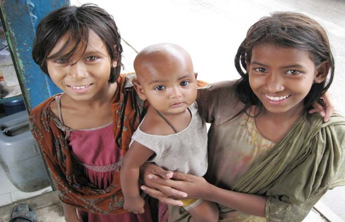

"ঈশ্বর তোমাকে মানুষ বানিয়েছেন যাতে মানবতা চিরকাল বেঁচে থাকে।"



জীবনের প্রতিটি অধ্যায়ে তারা বিভিন্ন ধরনের অবহেলা আর বঞ্চনার
শিকার। রাস্তাঘাটে এক টাকা-দুই টাকার জন্য তারা পথচারীকে অনুরোধ
করে নানাভাবে। কেউ কেউ আবার কাগজ কুড়ায়। তীব্র শীতের মধ্যেও
তাদের প্রায়ই গরম কাপড় ছাড়া দেখা যায়, যা অমানবিক ও দুঃখজনক।
রাজধানী ঢাকাসহ দেশের বিভিন্ন শহরে হাজার হাজার পথশিশু রয়েছে। পথই যাদের আবাস। পথেই যাদের বসবাস। জন্মের পর থেকেই যারা জীবন যুদ্ধের সঙ্গে পরিচিত। রোদ-বৃষ্টি, গরম-শীত যাদের কাছে সমান। পরনে কাপড় আছে কি নেই তা তাদের কাছে মুখ্য নয়। সকালে ঘুম থেকে উঠেই মায়ের হাতের মজাদার খাবার দিয়ে নাস্তা করার পরিবর্তে তারা মানুষের বকুনি খায়। যখন অন্য শিশুরা পাঠশালায় জ্ঞান অন্বেষণে ব্যস্ত তখন এরা নিজদের ক্ষুণিবৃত্তির অনুসন্ধানে লিপ্ত। ছিন্নবস্ত্র পরিহিত বা বস্ত্রহীন এরাই পথ শিশু নামে সর্বত্র পরিচিত।
রাজধানী ঢাকাসহ দেশের বিভিন্ন শহরে হাজার হাজার পথশিশু রয়েছে। পথই যাদের আবাস। পথেই যাদের বসবাস। জন্মের পর থেকেই যারা জীবন যুদ্ধের সঙ্গে পরিচিত। রোদ-বৃষ্টি, গরম-শীত যাদের কাছে সমান। পরনে কাপড় আছে কি নেই তা তাদের কাছে মুখ্য নয়। সকালে ঘুম থেকে উঠেই মায়ের হাতের মজাদার খাবার দিয়ে নাস্তা করার পরিবর্তে তারা মানুষের বকুনি খায়। যখন অন্য শিশুরা পাঠশালায় জ্ঞান অন্বেষণে ব্যস্ত তখন এরা নিজদের ক্ষুণিবৃত্তির অনুসন্ধানে লিপ্ত। ছিন্নবস্ত্র পরিহিত বা বস্ত্রহীন এরাই পথ শিশু নামে সর্বত্র পরিচিত।
Gallery

What we do
We conduct social services in the remote areas of Bangladesh
and always strive to help the underprivileged.
Our Vision
Our mission is to be a shelter of the helpless people.